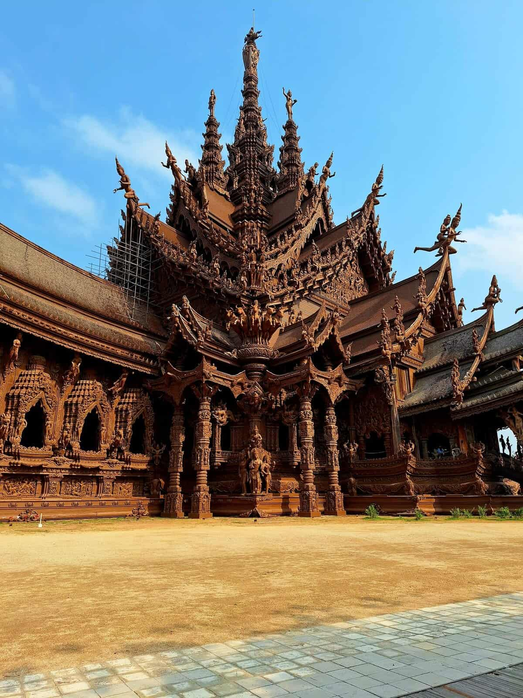
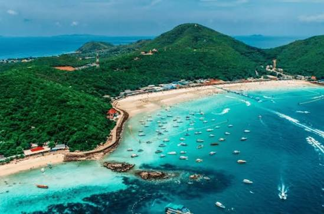
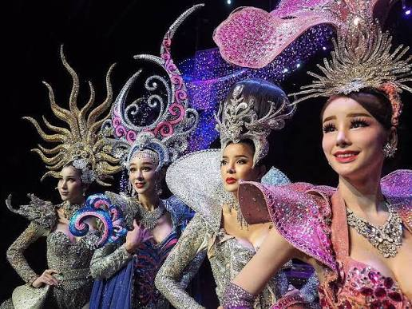
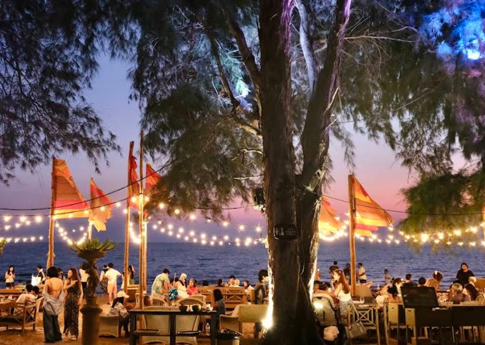
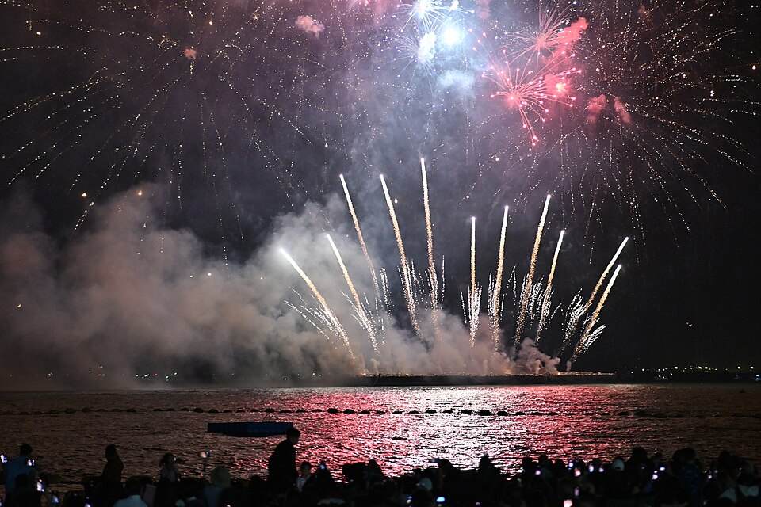

整体节奏一览
12/25（五）曼谷抵达・圣诞灯饰★☆☆
12/26（六）大皇宫经典・中国城★★☆
12/27（日）曼谷玩乐日：泰服写真・运河长尾船・高空夕阳★★☆
12/28（一）曼谷→芭达雅・移动・真理寺・海滩夕阳★★☆
12/29（二）格兰岛跳岛玩水★★☆
12/30（三）东芭乐园・蒂芬妮人妖秀★★☆
12/31（四）慢活・海滩跨年烟火★★☆
1/1（五）芭达雅→曼谷・回曼谷・采买・收尾晚餐★☆☆
1/2（六）返程★☆☆
a
机票
两人都直飞曼谷，且落地时间非常接近——是三个方案中会合最方便的（每天约 20 班 PVG–BKK 直飞航班）。全程不需国内线，是最省钱的方案。
| 去程 | 航班 | 时间 | 金额（每人） |
|---|---|---|---|
| 🐶（TPE → BKK） | CI | 13:50 → 16:45 | — |
| 💩（PVG → BKK） | 春秋 | 13:00 → 16:45 | — |
| 几乎同时落地，直接在到达大厅会合，是三个方案中最轻松的会合方式。 | |||
| 回程 1/2 | 航班 |
|---|---|
| 两人皆从 BKK 出发（可各自选择对应航空公司） | — |
机票小计（两人）：最低约 ¥5,200／推荐组合约 ¥6,200／最高约 ¥8,800。
b
旅游风格
曼谷玩乐＋海滨度假＋海滩跨年＋收尾晚餐。不需搭国内线，全程陆路移动，交通最单纯。
👍 强项
- 最省钱（中间值比方案 1 少约 2,000、比方案 3 少约 5,000）
- 会合最简单：两班几乎同时落地
- 不用搭国内线，航班选择最多、最不怕延误
- 芭达雅跨年祭（免费海滩演唱会＋烟火），度假感强
- 娱乐丰富：人妖秀、东芭乐园、格兰岛
👎 劣势
- 芭达雅的海不漂亮，风景最普通（格兰岛较佳）
- Walking Street 一带是红灯区，观感可能不佳，建议住北边 Wong Amat / Naklua
- 文化深度普通，较像「城市＋乐园」
- 陆路移动 2 次（各约 2–2.5 小时），要换 3 间酒店
c
每日规划
12/25周五・抵达曼谷
住宿：曼谷（第 1 晚）
傍晚
两人几乎同时落地，会合入住
晚上
CentralWorld 圣诞灯饰
12/26周六・大皇宫经典＋中国城
住宿：曼谷（第 2 晚）
上午
大皇宫＋玉佛寺
上午
Wat Pho 卧佛寺（可安排寺内按摩学校 30 分钟体验）
午餐
Thipsamai 打抛 / 炒河粉
午后
ICONSIAM 逛街
晚上
Yaowarat 中国城晚餐


12/27周日・曼谷玩乐日
 住宿：曼谷（第 3 晚）
住宿：曼谷（第 3 晚）
上午
Wat Arun 泰服写真
午后
Thonburi 运河长尾船游
傍晚
Mahanakhon SkyWalk 高空夕阳
晚上
Jodd Fairs 夜市 或 Rajadamnern 泰拳

Thonburi 运河长尾船
穿梭曼谷后花园般的运河水巷，体验在地水上生活风貌。


12/28周一・移动芭达雅＋真理寺
住宿：芭达雅 Wong Amat / Naklua（第 1 晚）
上午
车程／Grab 前往芭达雅（约 2 小时）
午餐
Krua Nai Baan（Naklua，米其林推荐，直接向渔民采买食材）
午后
Sanctuary of Truth 真理寺
傍晚
Wong Amat 海滩夕阳
晚上
Mum Aroi 海鲜晚餐

Sanctuary of Truth 真理寺
全木造建筑，高度 105 公尺，工程至今仍在持续进行。日票 500 THB／夜票 700 THB。
必看：纯木雕刻的巨大殿堂外观、海边夕阳衬托的剪影
12/29周二・格兰岛跳岛玩水
 住宿：芭达雅（第 2 晚）
住宿：芭达雅（第 2 晚）
上午
Bali Hai 码头搭船前往格兰岛（公共渡轮 30 THB／45 分，或快艇 250–400 THB／15 分）
白天
Tawaen／Samae 海滩游泳、浮潜、拖曳伞
晚上
Lung Shall Kitchen 晚餐（必比登，墨鱼汁炒鱿鱼）；芭达雅跨年祭首日活动
Koh Larn 格兰岛
芭达雅外海岛屿，海水比本岛清澈，是水上活动的主要去处：浮潜、拖曳伞、香蕉船一应俱全。

Tawaen／Samae 海滩
格兰岛上最热闹的两处海滩，沙质细软，水上活动摊位密集。
12/30周三・东芭乐园＋人妖秀
住宿：芭达雅（第 3 晚）
上午
Nong Nooch Tropical Garden 东芭乐园（500 THB 不含秀／800 THB 含秀）
午后
Khao Chi Chan 七珍佛山（山壁雷射雕刻鎏金佛像）
晚餐
Pladids（必比登）
晚上
Tiffany's Show 蒂芬妮人妖秀（约 US$45 起）

Tiffany's Show 蒂芬妮人妖秀
芭达雅历史最悠久的大型歌舞秀之一，华丽服装与舞台效果是招牌看点。
12/31周四・慢活＋海滩跨年
住宿：芭达雅（第 4 晚）
上午
Khao Pattaya View Point＋大佛山（Wat Phra Yai）
午餐
The Glass House（Na Jomtien）
午后
海滩 / 泳池休息
21:00
芭达雅跨年祭海滩演唱会
00:00
Bali Hai 码头跨年烟火（15–20 分钟，整条海滩路都看得到）

The Glass House（Na Jomtien）
Na Jomtien 的人气海景餐厅，适合午餐时段悠闲用餐。
跨年夜当晚有免费接驳车行驶于 16:00–01:00，多条道路将封闭管制。

Bali Hai 码头跨年烟火
午夜时分沙滩正前方海面施放的烟火秀，整条海滩路都能观赏，是芭达雅跨年夜的最高潮。
1/1周五・回曼谷・采买・收尾晚餐
住宿：曼谷（第 4 晚，靠近机场方向）
上午
上午出发回曼谷，避开下午车潮
午餐
Go-Ang Pratunam 水门鸡饭
下午
CentralWorld / Jim Thompson 采买
傍晚
情侣 SPA
晚上
收尾晚餐

1/2周六・返程
d
建议体验活动
格兰岛浮潜 / 拖曳伞★★★
芭达雅跨年祭（免费）★★★
蒂芬妮人妖秀★★☆
Wat Arun 情侣泰服写真★★★
Thonburi 运河长尾船★★☆
Mahanakhon SkyWalk★★☆
按摩 / SPA★★☆
Wat Pho 按摩学校★★☆
e
行程节奏
最辛苦的两天（12/27 玩乐日、12/28 移动日）之后紧接轻松的岛屿日；跨年前一天刻意安排慢活行程，养精蓄锐迎接跨年夜。
轻松
中强
中强
移动日
中强
中强
轻松＋跨年高峰
移动＋收尾
f
预算（两人合计，人民币）
| 项目 | 最低 | 最高 |
|---|---|---|
| 机票 | 5,200 | 8,800 |
| 住宿（8 晚） | 3,600 | 10,800 |
| 当地交通 | 700 | 1,600 |
| 餐饮 | 2,000 | 6,000 |
| 门票活动 | 1,400 | 5,200 |
| 杂支 | 800 | 2,400 |
| 合计 | 13,700 | 34,800 |
推荐中间值：约 ¥20,000（两人合计）
g
住宿
曼谷
前 3 晚建议河滨或 Siam / Sukhumvit 区；最后 1 晚建议 Sukhumvit（往机场较快）。
芭达雅（建议北边 Wong Amat / Naklua，安静且适合情侣，远离红灯区）
| 价位 | 酒店 | 特色 |
|---|---|---|
| 高 | Cape Dara Resort | 私人海滩感，US$123 起 |
| 中高 | Hilton Pattaya | — |
| 中价 | Pullman Pattaya Hotel G | Wong Amat 海滩，约 2,800 THB 起 |
| 平价 | Naklua 三星酒店 | 1,200–2,000 THB |
注意：许多海滩酒店跨年夜有强制参加的跨年晚宴，会额外加价数千泰铢，订房时务必先确认。